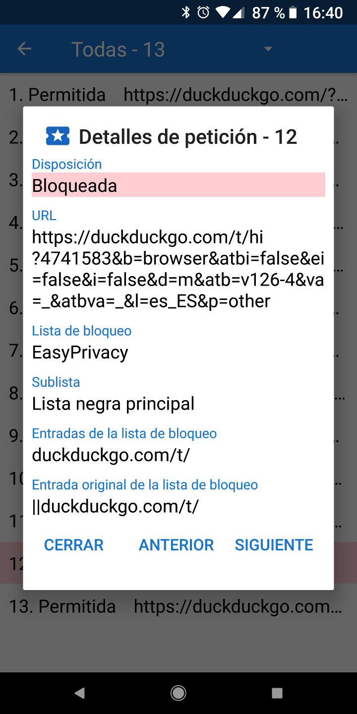

Resource Requests Resource Requests
Resource Requests Resource RequestsWhen a URL is loaded, it typically makes a number of resource requests for CCS, JavaScript, image, and other files. Details about these requests can be viewed in the Requests activity. The navigation drawer has a link to the Requests activity and also shows how many requests were blocked. Tapping on a request displays details about why it was allowed or blocked.

Privacy Browser includes four blocklists based on the Adblock syntax: EasyList, EasyPrivacy, Fanboy’s Annoyance List, and Fanboy’s Social Blocking List. These blocklists are processed by Privacy Browser into the following 22 sublists, which check resource requests in the order listed.
Initial lists check against the beginning of the URL. Final lists check against the end of the URL. Domain lists only check against certain domains. Third-party lists only apply if the root domain of the request is different than the root domain of the main URL. Regular expression lists follow the regular expression syntax. Each sublist item has one or more entry. In the case of domain sublists, the resource request is only checked against the item if the first entry matches the domain of the main URL.
Because of limitations in Android’s WebView, and to speed up processing of requests, Privacy Browser implements a simplified interpretation of the Adblock syntax. This can sometimes lead to false positives, where resources are allowed or blocked in ways that weren’t intended by the original entry. A more detailed description of how the blocklist entries are processed is available at stoutner.com.
Privacy Browser has a fifth blocklist that blocks all third-party requests. A request is only considered third-party if the base domain of the request is different than the base domain of the URL.
For example, if www.website.com loads a picture from images.website.com,
this is not blocked as a third-party request because they both share the same base domain of website.com.
Blocking all third-party requests increases privacy, but this blocklist is disabled by default because it breaks a large number of websites.